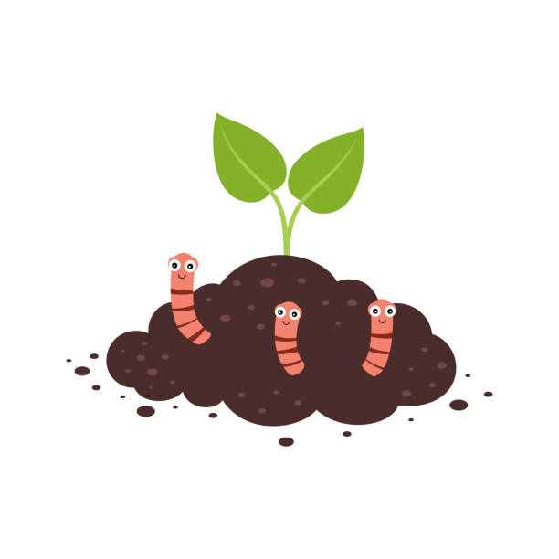

About Willy
Willy the worm is a common earthworm born in the inner city Melbourne suburb of Parkville. Unsurprisingly, he lives in the earth and eats dirt and scraps to survive. This might sound like an unpleasant life to the human reading this, but to Willy and others of his kind, this is literally the ideal way to be.
Willy and his parents at their house
Fun facts about Willy
- Willy loves to read
- He likes to eat breatcrumbs and apple cores best
- His biggest fear is crows and magpies :(
- One day he hopes to be able to travel across the road
Willy's ancestry
Being a worm, Willy is friends mostly with other worms. He comes from a long line of other earthworms, and has distant relations to many well-known worms.